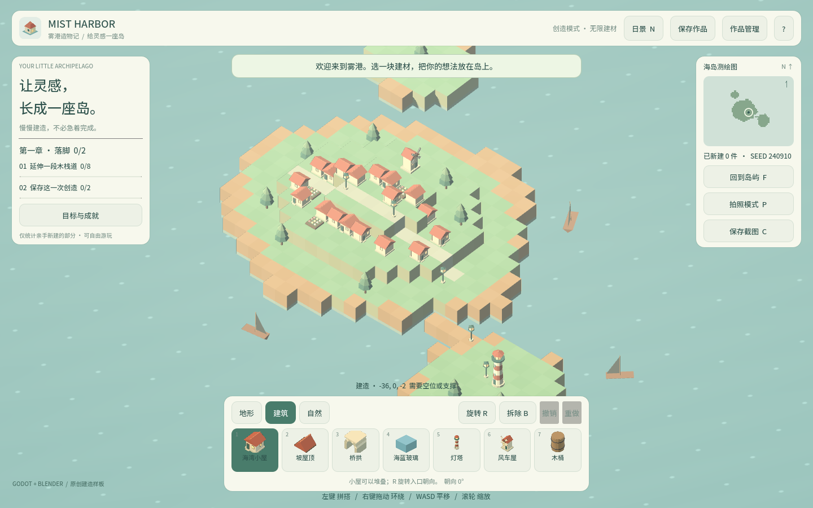
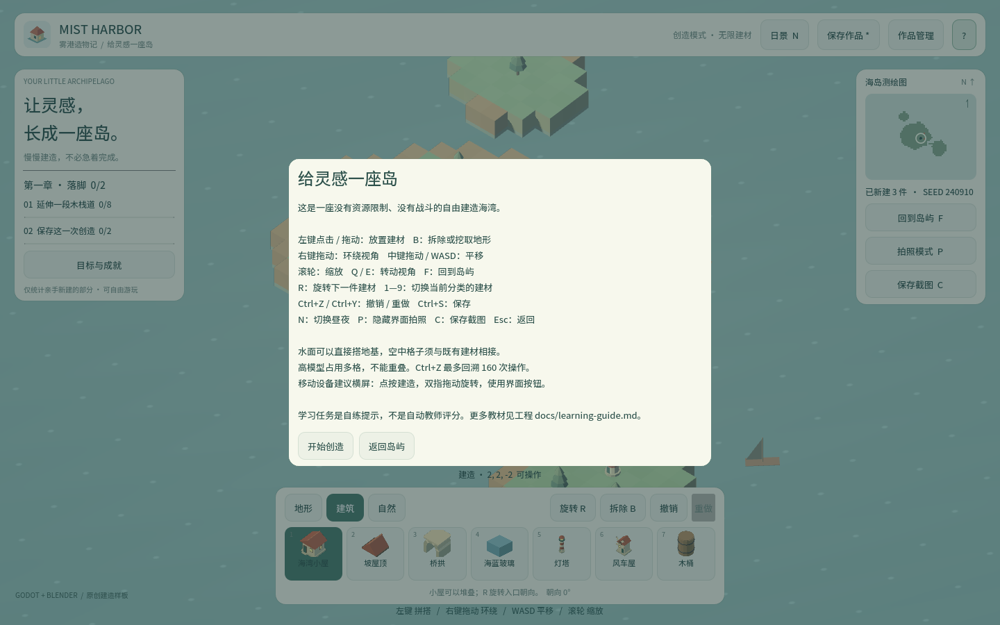
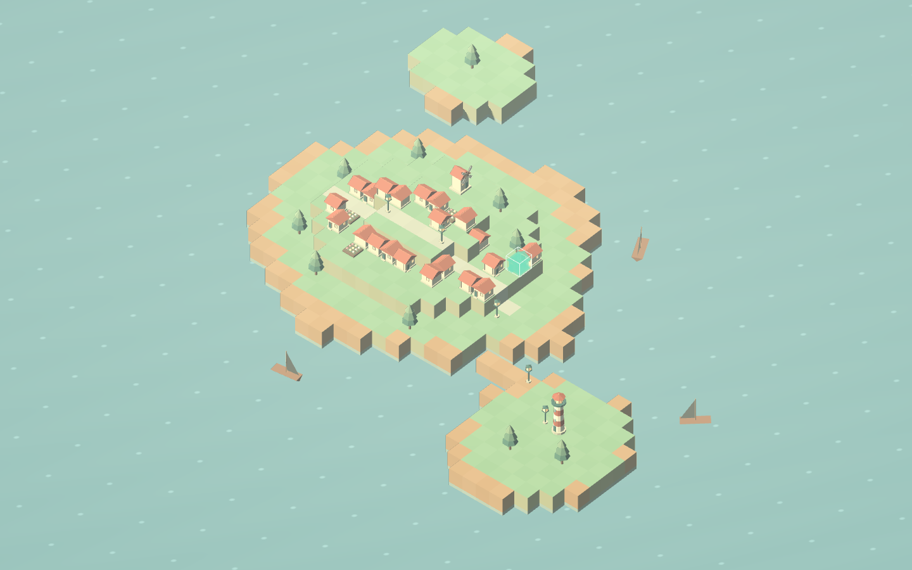
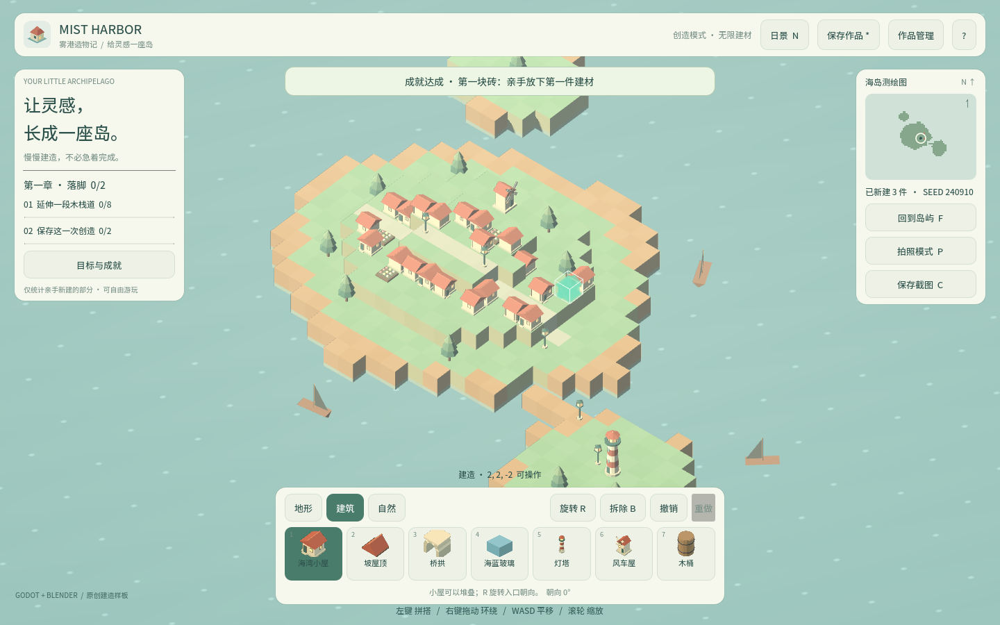

卷 0 · 第 03 章 让 Agent 成为搭档：G-V-C 协作协议
本章目标：掌握一套可重复的 Agent 协作节奏（G-V-C 循环），学会写出"不会被糊弄"的
提示词，并识别 Agent 最常见的三种"看起来完成了"。
对应任务：T05 / T06 | 对应提交：1f21b88（资产管线首件 barrel）
3.1 Agent 不是搜索引擎，也不是许愿机
先划清能力边界，避免两类失望：
| 期待 | 现实 |
|---|---|
| --- | --- |
| "帮我做个游戏" | ❌ 目标不可验证，Agent 只能给你一堆看起来对的代码 |
| "把 barrel 做成能放的建材，跑通测试" | ✅ 目标 + 验收都明确，可以一次做对 |
| Agent 自己会验证 | ❌ 验证必须由命令和人负责，Agent 不能自证成功 |
| Agent 记得住上次为什么这么改 | ❌ 上下文会丢；所以要有 TOOLCHAIN.md、任务清单和 git 历史 |
📌 一句话：Agent 负责"改"，命令负责"判"，你负责"定目标"。
3.2 G-V-C 循环（本实训的统一节奏）
G（Goal 目标） → 一句话说清"做完之后，世界有什么不同"
V（Verify 验证） → 先写"怎么证明做成了"（命令 / 断言 / 截图 / 文件）
C（Change 改动） → 让 Agent 小步改，每步都跑 V；不过就不许往下走为什么 V 要写在 C 前面？ 因为一旦先改代码，你的判断就会被"我已经写了这么多"绑架；
先定验收，才能客观。
一个完整的 G-V-C 示例（真实任务 T09）
G：新增一个"木桶"建材，能在游戏里选中并放置。
V：python tools/asset_pipeline.py list 里出现 barrel；
python tools/dev.py test 的 failed 为 0。
C：写 tools/art/barrel.py → 跑管线 → 跑测试。🤖 提示词（可直接复制，注意最后的约束条款）：
目标（G）：新增一个"木桶"建材，能在游戏里选中并放置。
验收（V）：python tools/asset_pipeline.py list 出现 barrel；
python tools/dev.py test 的 failed 为 0。
执行（C）：
1. 参考 tools/art/ 下已有脚本的写法，新增 barrel.py（单文件、米制 Z-up、只建几何与材质）；
2. 运行 python tools/asset_pipeline.py build --id barrel；
3. 运行 python tools/dev.py test，把最后两行结果贴给我。
约束：
- 不要为了让测试变绿而删除或放宽任何断言；
- 每一步都先告诉我你观察到了什么，再改下一步；
- 失败时先给原因，不要直接重试。最后那三条约束是本实训的固定尾部，每条提示词都带上。它们分别防三件事：
删断言自证、盲改不汇报、无脑重试。
3.3 提示词模板与三个反模式
模板（记住这五段）
【背景】我是谁、工程在哪、现在什么状态
【目标】一句话的可验证目标
【验收】具体命令 + 期望输出
【步骤】1. 2. 3.（每步可单独验证）
【约束】不许删断言 / 逐步汇报 / 失败先给原因反模式（本实训真实踩过）
| 反模式 | 后果 | 怎么防 |
|---|---|---|
| --- | --- | --- |
| 一次性写完再跑 | 一次出现 5 个错误，互相掩盖 | 每 20–80 行就跑一次验证 |
| 让 Agent 自己判断成功 | 它会说"已完成"，但根本没跑测试 | 提示词里必须写"把命令输出贴给我" |
| 没有约束条款 | 它会删掉挡路的断言 | 固定尾部三条约束 |
真实案例：本实训把 GLB 数量断言从"写死 8 个"改为"从
palette.json推导"，
正是因为加了木桶之后写死的数字立刻报错——这个报错是对的，错的是写死的方式。
3.4 Agent 会怎么"看起来完成了"（三种）
- 删断言型：测试红了，它把断言删了 → 约束条款第 1 条拦截
- 口头完成型：输出"已完成"但没执行命令 → 要求"贴命令输出"
- 范围蔓延型：你让它改 A，它顺手重构了 B、C → 步骤里写"只改这些文件"
识别方法：要求它每次回答都包含三样东西——① 改了哪些文件 ② 跑了什么命令 ③ 输出是什么。
缺任何一样，就当作没做完。
3.5 小步提交：把 G-V-C 固化到 git
一次 G-V-C = 一次提交- 提交信息写"做了什么 + 为什么"，不写"修改文件"
- 提交前必跑
python tools/dev.py test - 每完成一个阶段打一个 tag，例如
course-stage-1
本实训的提交历史本身就是教材：你可以
git log --oneline看到
从"工程基线"到"资产管线"到"玩法包装"的每一步，章首都标了对应提交。
🌩 在云端 agent（web-cb）里是什么样
| 🖥 本地路线 | 🌩 云端 agent（web-cb） | |
|---|---|---|
| --- | --- | --- |
| Agent | 自己装 CodeBuddy、自己配 MCP | 平台内置 Agent，MCP 与 skill 已挂好 |
| 项目上下文 | 自己 clone 仓库、自己看 TOOLCHAIN.md | 平台预建仓库，并预置项目说明与 skill |
| 提示词 | 自己写完整五段 | 模板不变（G-V-C + 约束三条），平台可能预填背景段 |
| 验证 | 本地终端跑 dev.py test | 平台内一键运行，底层同一条命令 |
| 提交 | 本地 git commit/push | 平台托管仓库，提交动作一致 |
关键：G-V-C 与三条约束在云端同样适用。 平台替你装好了工具，但不会替你定目标和验收——
那仍然是你（和教师）的职责。
🌩 云端额外一点：平台可能提供"项目模板/skill"，让背景段自动带上工程约定。
这不改变 V 的位置——验收永远写在改动之前。
3.6 常见坑速查（本章）
| 现象 | 原因 | 处理 |
|---|---|---|
| --- | --- | --- |
| Agent 说完成了但功能没生效 | 它没跑命令 | 要求贴命令输出 |
| 测试突然少了几条 | 断言被删 | 约束第 1 条 + git diff 检查 |
| 一次改动很大，报错互相掩盖 | 步子太大 | 拆成 20–80 行的小步 |
| Agent 改了不该改的文件 | 没限定范围 | 步骤里写明"只改 xx 文件" |
| 换会话后它忘了背景 | 上下文丢失 | 提示词里带背景段，或让它先读 TOOLCHAIN.md/任务清单 |
3.7 本章作业
- 用 3.2 的模板，为"给木栈道换一个颜色"写一个完整的 G-V-C 提示词，并真的执行一次
- 故意触发一次"口头完成型"：只说"帮我把灯塔加高一点"，看 Agent 怎么回答；
然后补上验收命令再问一次，对比两次答案
- 把一次改动作成一次提交，提交信息写清"做了什么 + 为什么"
- 记录一条你自己的约束条款（下次写提示词时加在尾部）
🎓 教学提示（给教师 / 直播主）
- 概念锚点：Agent 是"手"，命令是"裁判"，人是"出题人"。
- 课堂演示：同一个需求问两遍——第一遍不给验收，第二遍给验收。把两次回答并排展示，
学生立刻理解 V 的价值。
- 最常见的学生错误：把验收写成"功能正常"。要求他们用命令或数字表达验收。
- 讨论题：如果 Agent 自己写了测试并通过，算不算验证通过？（引导到"谁来写验收"）
- 批改要点：作业 1 必须包含可执行的验收命令；只写"检查是否生效"不给分。
🖼 本章图集




📹 录屏分镜（10 分钟）
| 时间 | 画面 | 解说词要点 |
|---|---|---|
| --- | --- | --- |
| 00:00–01:00 | 能力边界表 | "Agent 不是许愿机。" |
| 01:00–02:30 | G-V-C 三个字母逐个出现 | "先定验收，再动手。" |
| 02:30–04:30 | 现场写一次完整五段提示词 | "背景、目标、验收、步骤、约束。" |
| 04:30–06:00 | 三种"看起来完成了"的现场复现 | "它会删断言、会口头完成、会改超范围。" |
| 06:00–07:30 | 小步提交演示 | "一次 G-V-C = 一次提交。" |
| 07:30–09:00 | 云端/本地对照 | "平台替你装工具，不替你定验收。" |
| 09:00–10:00 | 作业 + 预告 |
🎬 视频位（待录制）
把录好的视频放到course/media/video/03/（mp4 / webm / mov），重新执行 python tools/course_build.py 即会自动内嵌；首帧默认用本章第一张截图作为封面。分镜脚本见上一节。🖼 配图清单
| 文件名 | 内容 | 生成方式 |
|---|---|---|
| --- | --- | --- |
03-game-start.png | 起始画面 | python tools/course_capture.py --chapter 03 |
03-three-cottages.png | 连续放置三间小屋（演示"每步都验证"） | 同上 |
03-photo-mode.png | 按 P 隐藏界面（演示"看得见才算"） | 同上 |
03-help-overlay.png | 帮助浮层（演示"确认真的生效"） | 同上 |
🎥 直播脚本（L2 片段，15 分钟）
- 开场互动：让观众在聊天区写一个"加高灯塔"的需求，选两个来现场问 Agent（一个带验收、一个不带）
- 演示：展示两种回答的差距
- 反转环节：故意让 Agent "删掉挡路的断言"，现场用
git diff抓出来 - 收尾：发"三条约束"便签
❓ 本章 FAQ
Q：云端 agent 已经带 skill 了，我还需要写这么完整的提示词吗？
A：需要。skill 替你补"背景"，但目标与验收必须由你给出——这是 G-V-C 里唯一不能自动化的部分。
Q：Agent 自己写了测试并跑通，算验证吗？
A：算"它自测过"，不算"验收通过"。验收是你（或教师）定义的命令与期望输出。
Q：小步到什么程度合适？
A：以"跑一次验证不超过 1 分钟"为准。本实训的经验值是 20–80 行代码一步。